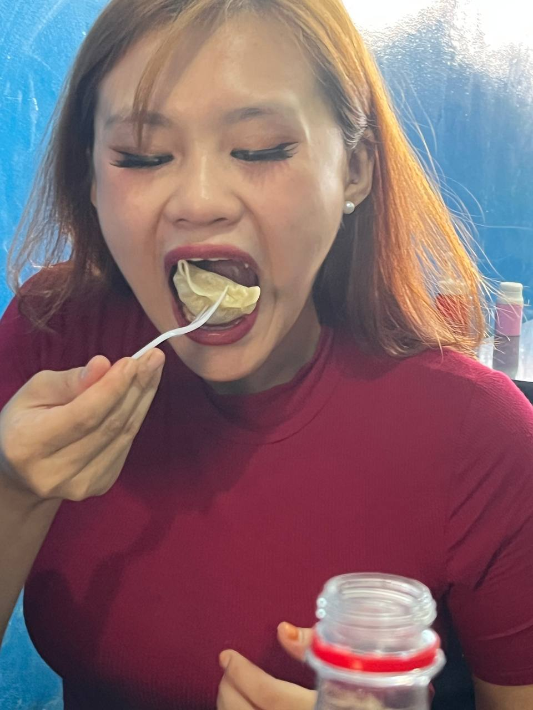

To my favourite human ✦ 23 looks good on you
Happiest
Birthday
To My Kun ♡
To the girl who makes ordinary days unforgettable. This little corner of the internet is filled with love, laughter, and all the things that remind me of you.

Made with so much love
Four little surprises for you ♡
Pick one, birthday girl. Every corner has a little piece of us.
Here's to growing older without growing up ♡